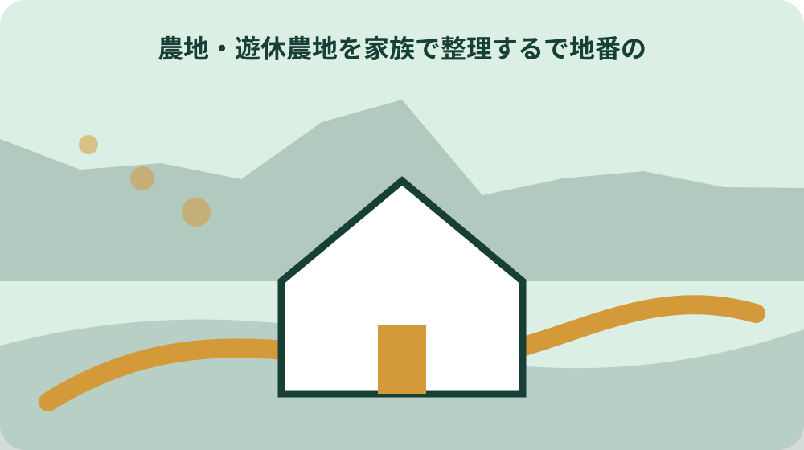
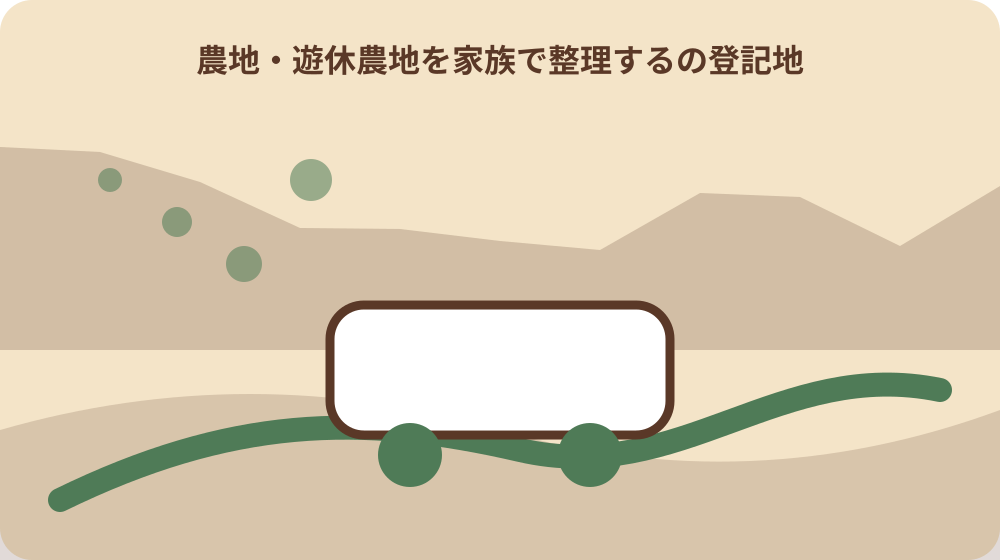

遊休農地を家族で整理するで地番と登記地目を混ぜない
焦点「遊休農地を家族で整理する」の論点「遊休農地を家族で整理するで地番と登記地目を混ぜない」として、森町で特に分けて考える条件は「森町公式主資料の地番と補完資料の登記地目を別々に確認し、それぞれの確認日を残す。」です。相続した耕作していない農地をどう整理するか知りたいという目的に照らし、住所、利用者、実行時期のどれが違えば結論が変わるかを確認表へ書きます。町全体の一般論を個別地点の答えへ置き換えません。
焦点「遊休農地を家族で整理する」の論点「遊休農地を家族で整理するで地番と登記地目を混ぜない」として、森町の遊休農地を家族で整理する｜現況・名義・管理について家族や担当窓口へ尋ねるときは、「遊休農地を家族で整理するで地番と登記地目を混ぜない」「「森町の遊休農地を家族で整理する｜現況・名義・管理」の確認対象は、地番と登記地目を別項目として記録する実務であり、一方から他方を推定しない。」「未確認の個別条件」の三点を一組で伝えます。返答は可否だけでなく、根拠資料名、担当部署、再確認が必要な時点まで残します。
遊休農地を家族で整理する・第1論点の断定防止：一次資料の対象日・対象者・窓口を明記。公的事実と大石の見解を分離。現地未確認事項を断定しない。家族が再確認できる記録様式を提示。「「森町の遊休農地を家族で整理する｜現況・名義・管理」の確認対象は、地番と登記地目を別項目として記録する実務であり、一方から他方を推定しない。」を確認できない場合は結論を保留し、一次情報の所管窓口または必要な専門家へ確認します。
遊休農地を家族で整理するの現況を森町公式主資料から転記する
焦点「遊休農地を家族で整理する」の論点「遊休農地を家族で整理するの現況を森町公式主資料から転記する」として、森町の遊休農地を家族で整理する｜現況・名義・管理について家族や担当窓口へ尋ねるときは、「遊休農地を家族で整理するの現況を森町公式主資料から転記する」「遊休農地を家族で整理するでは、現況を資料の更新日と混同せず、対象となる日付・年度として転記する。」「未確認の個別条件」の三点を一組で伝えます。返答は可否だけでなく、根拠資料名、担当部署、再確認が必要な時点まで残します。
焦点「遊休農地を家族で整理する」の論点「遊休農地を家族で整理するの現況を森町公式主資料から転記する」として、実行前の記録には、第2の論点「遊休農地を家族で整理するの現況を森町公式主資料から転記する」、確認日、対象年度、担当者へ伝えた前提を書きます。。このページで断定できない事項は推測で補わず、確認待ちとして次の担当と期限を決めます。
遊休農地を家族で整理する・第2論点の断定防止：一次資料の対象日・対象者・窓口を明記。公的事実と大石の見解を分離。現地未確認事項を断定しない。家族が再確認できる記録様式を提示。「遊休農地を家族で整理するでは、現況を資料の更新日と混同せず、対象となる日付・年度として転記する。」を確認できない場合は結論を保留し、一次情報の所管窓口または必要な専門家へ確認します。
遊休農地を家族で整理するの所有者・耕作者を補完資料で照合する
焦点「遊休農地を家族で整理する」の論点「遊休農地を家族で整理するの所有者・耕作者を補完資料で照合する」として、実行前の記録には、第3の論点「遊休農地を家族で整理するの所有者・耕作者を補完資料で照合する」、確認日、対象年度、担当者へ伝えた前提を書きます。。このページで断定できない事項は推測で補わず、確認待ちとして次の担当と期限を決めます。
焦点「遊休農地を家族で整理する」の論点「遊休農地を家族で整理するの所有者・耕作者を補完資料で照合する」として、この論点を後回しにすると、必要資料、移動、家族の役割、費用のいずれかで手戻りが起こります。まず「実行・申請・訪問の直前に現況と進入路と相談日を森町の所管窓口または当事者へ再確認する。」を確かめ、次に「所有者・耕作者は面積だけから断定できないため、森町公式の補完資料または担当窓口で照合する。」が自分のケースへ適用されるかを所管情報と窓口で照合してください。
遊休農地を家族で整理する・第3論点の断定防止：一次資料の対象日・対象者・窓口を明記。公的事実と大石の見解を分離。現地未確認事項を断定しない。家族が再確認できる記録様式を提示。「所有者・耕作者は面積だけから断定できないため、森町公式の補完資料または担当窓口で照合する。」を確認できない場合は結論を保留し、一次情報の所管窓口または必要な専門家へ確認します。
遊休農地を家族で整理するの面積を一件に特定する
焦点「遊休農地を家族で整理する」の論点「遊休農地を家族で整理するの面積を一件に特定する」として、この論点を後回しにすると、必要資料、移動、家族の役割、費用のいずれかで手戻りが起こります。まず「森町公式主資料の地番と補完資料の登記地目を別々に確認し、それぞれの確認日を残す。」を確かめ、次に「「相続した耕作していない農地をどう整理するか知りたい」という問いに答えるには、地番・現況・進入路と相談日を同じ確認記録へ結び付ける必要がある。」が自分のケースへ適用されるかを所管情報と窓口で照合してください。
焦点「遊休農地を家族で整理する」の論点「遊休農地を家族で整理するの面積を一件に特定する」として、「遊休農地を家族で整理するの面積を一件に特定する」で根拠にする確認事項は、「相続した耕作していない農地をどう整理するか知りたい」という問いに答えるには、地番・現況・進入路と相談日を同じ確認記録へ結び付ける必要がある。です。この記載が今回の対象と一致するか、対象者、対象日、場所、例外を資料本文で照合します。確認元は https://www.town.morimachi.shizuoka.jp/gyosei/sangyo_shigoto/noringyo/5759.html として記録し、検索結果の要約だけで判断しません。
遊休農地を家族で整理する・第4論点の断定防止：一次資料の対象日・対象者・窓口を明記。公的事実と大石の見解を分離。現地未確認事項を断定しない。家族が再確認できる記録様式を提示。「「相続した耕作していない農地をどう整理するか知りたい」という問いに答えるには、地番・現況・進入路と相談日を同じ確認記録へ結び付ける必要がある。」を確認できない場合は結論を保留し、一次情報の所管窓口または必要な専門家へ確認します。

遊休農地を家族で整理するで地番の定義が資料間で違うときの止め方
焦点「遊休農地を家族で整理する」の論点「遊休農地を家族で整理するで地番の定義が資料間で違うときの止め方」として、「遊休農地を家族で整理するで地番の定義が資料間で違うときの止め方」で根拠にする確認事項は、森町公式の主資料と補完資料は別URLで公開されており、2026年8月9日に両方のHTTP 200応答を確認した。です。この記載が今回の対象と一致するか、対象者、対象日、場所、例外を資料本文で照合します。確認元は https://www.town.morimachi.shizuoka.jp/gyosei/sangyo_shigoto/noringyo/5759.html として記録し、検索結果の要約だけで判断しません。
焦点「遊休農地を家族で整理する」の論点「遊休農地を家族で整理するで地番の定義が資料間で違うときの止め方」として、森町で特に分けて考える条件は「森町内でも面積が異なれば条件が変わるため、対象住所・地番・施設を特定せず町全体の説明を個別案件へ当てはめない。」です。相続した耕作していない農地をどう整理するか知りたいという目的に照らし、住所、利用者、実行時期のどれが違えば結論が変わるかを確認表へ書きます。町全体の一般論を個別地点の答えへ置き換えません。
遊休農地を家族で整理する・第5論点の断定防止：一次資料の対象日・対象者・窓口を明記。公的事実と大石の見解を分離。現地未確認事項を断定しない。家族が再確認できる記録様式を提示。「森町公式の主資料と補完資料は別URLで公開されており、2026年8月9日に両方のHTTP 200応答を確認した。」を確認できない場合は結論を保留し、一次情報の所管窓口または必要な専門家へ確認します。
遊休農地を家族で整理するの登記地目に旧表記・略称がある場合の残し方
焦点「遊休農地を家族で整理する」の論点「遊休農地を家族で整理するの登記地目に旧表記・略称がある場合の残し方」として、森町で特に分けて考える条件は「実行・申請・訪問の直前に現況と進入路と相談日を森町の所管窓口または当事者へ再確認する。」です。相続した耕作していない農地をどう整理するか知りたいという目的に照らし、住所、利用者、実行時期のどれが違えば結論が変わるかを確認表へ書きます。町全体の一般論を個別地点の答えへ置き換えません。
焦点「遊休農地を家族で整理する」の論点「遊休農地を家族で整理するの登記地目に旧表記・略称がある場合の残し方」として、森町の遊休農地を家族で整理する｜現況・名義・管理について家族や担当窓口へ尋ねるときは、「遊休農地を家族で整理するの登記地目に旧表記・略称がある場合の残し方」「遊休農地を家族で整理するの制度・分類の上位枠は所管機関の公式資料で照合し、森町の個別運用を国・県の一般説明だけで決めない。2026年8月9日に参照先のHTTP 200応答を確認した。」「未確認の個別条件」の三点を一組で伝えます。返答は可否だけでなく、根拠資料名、担当部署、再確認が必要な時点まで残します。
遊休農地を家族で整理する・第6論点の断定防止：一次資料の対象日・対象者・窓口を明記。公的事実と大石の見解を分離。現地未確認事項を断定しない。家族が再確認できる記録様式を提示。「遊休農地を家族で整理するの制度・分類の上位枠は所管機関の公式資料で照合し、森町の個別運用を国・県の一般説明だけで決めない。2026年8月9日に参照先のHTTP 200応答を確認した。」を確認できない場合は結論を保留し、一次情報の所管窓口または必要な専門家へ確認します。
遊休農地を家族で整理するの現況とウェブページ更新日を取り違えない
焦点「遊休農地を家族で整理する」の論点「遊休農地を家族で整理するの現況とウェブページ更新日を取り違えない」として、森町の遊休農地を家族で整理する｜現況・名義・管理について家族や担当窓口へ尋ねるときは、「遊休農地を家族で整理するの現況とウェブページ更新日を取り違えない」「「森町の遊休農地を家族で整理する｜現況・名義・管理」の確認対象は、地番と登記地目を別項目として記録する実務であり、一方から他方を推定しない。」「未確認の個別条件」の三点を一組で伝えます。返答は可否だけでなく、根拠資料名、担当部署、再確認が必要な時点まで残します。
焦点「遊休農地を家族で整理する」の論点「遊休農地を家族で整理するの現況とウェブページ更新日を取り違えない」として、実行前の記録には、第7の論点「遊休農地を家族で整理するの現況とウェブページ更新日を取り違えない」、確認日、対象年度、担当者へ伝えた前提を書きます。。このページで断定できない事項は推測で補わず、確認待ちとして次の担当と期限を決めます。
遊休農地を家族で整理する・第7論点の断定防止：一次資料の対象日・対象者・窓口を明記。公的事実と大石の見解を分離。現地未確認事項を断定しない。家族が再確認できる記録様式を提示。「「森町の遊休農地を家族で整理する｜現況・名義・管理」の確認対象は、地番と登記地目を別項目として記録する実務であり、一方から他方を推定しない。」を確認できない場合は結論を保留し、一次情報の所管窓口または必要な専門家へ確認します。
遊休農地を家族で整理するで所有者・耕作者が未確認のときに尋ねる担当
焦点「遊休農地を家族で整理する」の論点「遊休農地を家族で整理するで所有者・耕作者が未確認のときに尋ねる担当」として、実行前の記録には、第8の論点「遊休農地を家族で整理するで所有者・耕作者が未確認のときに尋ねる担当」、確認日、対象年度、担当者へ伝えた前提を書きます。。このページで断定できない事項は推測で補わず、確認待ちとして次の担当と期限を決めます。
焦点「遊休農地を家族で整理する」の論点「遊休農地を家族で整理するで所有者・耕作者が未確認のときに尋ねる担当」として、この論点を後回しにすると、必要資料、移動、家族の役割、費用のいずれかで手戻りが起こります。まず「森町内でも面積が異なれば条件が変わるため、対象住所・地番・施設を特定せず町全体の説明を個別案件へ当てはめない。」を確かめ、次に「遊休農地を家族で整理するでは、現況を資料の更新日と混同せず、対象となる日付・年度として転記する。」が自分のケースへ適用されるかを所管情報と窓口で照合してください。
遊休農地を家族で整理する・第8論点の断定防止：一次資料の対象日・対象者・窓口を明記。公的事実と大石の見解を分離。現地未確認事項を断定しない。家族が再確認できる記録様式を提示。「遊休農地を家族で整理するでは、現況を資料の更新日と混同せず、対象となる日付・年度として転記する。」を確認できない場合は結論を保留し、一次情報の所管窓口または必要な専門家へ確認します。
遊休農地を家族で整理するの面積を家族へ渡す記録様式
焦点「遊休農地を家族で整理する」の論点「遊休農地を家族で整理するの面積を家族へ渡す記録様式」として、この論点を後回しにすると、必要資料、移動、家族の役割、費用のいずれかで手戻りが起こります。まず「実行・申請・訪問の直前に現況と進入路と相談日を森町の所管窓口または当事者へ再確認する。」を確かめ、次に「所有者・耕作者は面積だけから断定できないため、森町公式の補完資料または担当窓口で照合する。」が自分のケースへ適用されるかを所管情報と窓口で照合してください。
焦点「遊休農地を家族で整理する」の論点「遊休農地を家族で整理するの面積を家族へ渡す記録様式」として、「遊休農地を家族で整理するの面積を家族へ渡す記録様式」で根拠にする確認事項は、所有者・耕作者は面積だけから断定できないため、森町公式の補完資料または担当窓口で照合する。です。この記載が今回の対象と一致するか、対象者、対象日、場所、例外を資料本文で照合します。確認元は https://www.town.morimachi.shizuoka.jp/gyosei/sangyo_shigoto/noringyo/5759.html として記録し、検索結果の要約だけで判断しません。
遊休農地を家族で整理する・第9論点の断定防止：一次資料の対象日・対象者・窓口を明記。公的事実と大石の見解を分離。現地未確認事項を断定しない。家族が再確認できる記録様式を提示。「所有者・耕作者は面積だけから断定できないため、森町公式の補完資料または担当窓口で照合する。」を確認できない場合は結論を保留し、一次情報の所管窓口または必要な専門家へ確認します。

遊休農地を家族で整理するの進入路と相談日を写真・図面・書類へ結び付ける
焦点「遊休農地を家族で整理する」の論点「遊休農地を家族で整理するの進入路と相談日を写真・図面・書類へ結び付ける」として、「遊休農地を家族で整理するの進入路と相談日を写真・図面・書類へ結び付ける」で根拠にする確認事項は、「相続した耕作していない農地をどう整理するか知りたい」という問いに答えるには、地番・現況・進入路と相談日を同じ確認記録へ結び付ける必要がある。です。この記載が今回の対象と一致するか、対象者、対象日、場所、例外を資料本文で照合します。確認元は https://www.town.morimachi.shizuoka.jp/gyosei/sangyo_shigoto/noringyo/5759.html として記録し、検索結果の要約だけで判断しません。
焦点「遊休農地を家族で整理する」の論点「遊休農地を家族で整理するの進入路と相談日を写真・図面・書類へ結び付ける」として、森町で特に分けて考える条件は「森町公式主資料の地番と補完資料の登記地目を別々に確認し、それぞれの確認日を残す。」です。相続した耕作していない農地をどう整理するか知りたいという目的に照らし、住所、利用者、実行時期のどれが違えば結論が変わるかを確認表へ書きます。町全体の一般論を個別地点の答えへ置き換えません。
遊休農地を家族で整理する・第10論点の断定防止：一次資料の対象日・対象者・窓口を明記。公的事実と大石の見解を分離。現地未確認事項を断定しない。家族が再確認できる記録様式を提示。「「相続した耕作していない農地をどう整理するか知りたい」という問いに答えるには、地番・現況・進入路と相談日を同じ確認記録へ結び付ける必要がある。」を確認できない場合は結論を保留し、一次情報の所管窓口または必要な専門家へ確認します。
このページの結論
焦点「遊休農地を家族で整理する」のこのページの結論で私が重視する第1の判断材料は「「森町の遊休農地を家族で整理する｜現況・名義・管理」の確認対象は、地番と登記地目を別項目として記録する実務であり、一方から他方を推定しない。」と「森町公式主資料の地番と補完資料の登記地目を別々に確認し、それぞれの確認日を残す。」の照合です。まだ実行を決めていなくても、確認日、対象、根拠、未確認事項を一枚に残せば、家族や担当者が同じ前提から話せます。確認できない事項は結論に混ぜず、次の確認先と期限を記録してください。
焦点「遊休農地を家族で整理する」のこのページの結論で私が重視する第2の判断材料は「遊休農地を家族で整理するでは、現況を資料の更新日と混同せず、対象となる日付・年度として転記する。」と「森町内でも面積が異なれば条件が変わるため、対象住所・地番・施設を特定せず町全体の説明を個別案件へ当てはめない。」の照合です。まだ実行を決めていなくても、確認日、対象、根拠、未確認事項を一枚に残せば、家族や担当者が同じ前提から話せます。確認できない事項は結論に混ぜず、次の確認先と期限を記録してください。
焦点「遊休農地を家族で整理する」のこのページの結論で私が重視する第3の判断材料は「所有者・耕作者は面積だけから断定できないため、森町公式の補完資料または担当窓口で照合する。」と「実行・申請・訪問の直前に現況と進入路と相談日を森町の所管窓口または当事者へ再確認する。」の照合です。まだ実行を決めていなくても、確認日、対象、根拠、未確認事項を一枚に残せば、家族や担当者が同じ前提から話せます。確認できない事項は結論に混ぜず、次の確認先と期限を記録してください。
焦点「遊休農地を家族で整理する」のこのページの結論で私が重視する第4の判断材料は「「相続した耕作していない農地をどう整理するか知りたい」という問いに答えるには、地番・現況・進入路と相談日を同じ確認記録へ結び付ける必要がある。」と「森町公式主資料の地番と補完資料の登記地目を別々に確認し、それぞれの確認日を残す。」の照合です。まだ実行を決めていなくても、確認日、対象、根拠、未確認事項を一枚に残せば、家族や担当者が同じ前提から話せます。確認できない事項は結論に混ぜず、次の確認先と期限を記録してください。
大石の視点
焦点「遊休農地を家族で整理する」の大石の視点で私が重視する第1の判断材料は「所有者・耕作者は面積だけから断定できないため、森町公式の補完資料または担当窓口で照合する。」と「実行・申請・訪問の直前に現況と進入路と相談日を森町の所管窓口または当事者へ再確認する。」の照合です。まだ実行を決めていなくても、確認日、対象、根拠、未確認事項を一枚に残せば、家族や担当者が同じ前提から話せます。確認できない事項は結論に混ぜず、次の確認先と期限を記録してください。
焦点「遊休農地を家族で整理する」の大石の視点で私が重視する第2の判断材料は「「相続した耕作していない農地をどう整理するか知りたい」という問いに答えるには、地番・現況・進入路と相談日を同じ確認記録へ結び付ける必要がある。」と「森町公式主資料の地番と補完資料の登記地目を別々に確認し、それぞれの確認日を残す。」の照合です。まだ実行を決めていなくても、確認日、対象、根拠、未確認事項を一枚に残せば、家族や担当者が同じ前提から話せます。確認できない事項は結論に混ぜず、次の確認先と期限を記録してください。
焦点「遊休農地を家族で整理する」の大石の視点で私が重視する第3の判断材料は「森町公式の主資料と補完資料は別URLで公開されており、2026年8月9日に両方のHTTP 200応答を確認した。」と「森町内でも面積が異なれば条件が変わるため、対象住所・地番・施設を特定せず町全体の説明を個別案件へ当てはめない。」の照合です。まだ実行を決めていなくても、確認日、対象、根拠、未確認事項を一枚に残せば、家族や担当者が同じ前提から話せます。確認できない事項は結論に混ぜず、次の確認先と期限を記録してください。
焦点「遊休農地を家族で整理する」の大石の視点で私が重視する第4の判断材料は「遊休農地を家族で整理するの制度・分類の上位枠は所管機関の公式資料で照合し、森町の個別運用を国・県の一般説明だけで決めない。2026年8月9日に参照先のHTTP 200応答を確認した。」と「実行・申請・訪問の直前に現況と進入路と相談日を森町の所管窓口または当事者へ再確認する。」の照合です。まだ実行を決めていなくても、確認日、対象、根拠、未確認事項を一枚に残せば、家族や担当者が同じ前提から話せます。確認できない事項は結論に混ぜず、次の確認先と期限を記録してください。
まとめと次の一歩
焦点「遊休農地を家族で整理する」のまとめと次の一歩で私が重視する第1の判断材料は「森町公式の主資料と補完資料は別URLで公開されており、2026年8月9日に両方のHTTP 200応答を確認した。」と「森町内でも面積が異なれば条件が変わるため、対象住所・地番・施設を特定せず町全体の説明を個別案件へ当てはめない。」の照合です。まだ実行を決めていなくても、確認日、対象、根拠、未確認事項を一枚に残せば、家族や担当者が同じ前提から話せます。確認できない事項は結論に混ぜず、次の確認先と期限を記録してください。
焦点「遊休農地を家族で整理する」のまとめと次の一歩で私が重視する第2の判断材料は「遊休農地を家族で整理するの制度・分類の上位枠は所管機関の公式資料で照合し、森町の個別運用を国・県の一般説明だけで決めない。2026年8月9日に参照先のHTTP 200応答を確認した。」と「実行・申請・訪問の直前に現況と進入路と相談日を森町の所管窓口または当事者へ再確認する。」の照合です。まだ実行を決めていなくても、確認日、対象、根拠、未確認事項を一枚に残せば、家族や担当者が同じ前提から話せます。確認できない事項は結論に混ぜず、次の確認先と期限を記録してください。
焦点「遊休農地を家族で整理する」のまとめと次の一歩で私が重視する第3の判断材料は「「森町の遊休農地を家族で整理する｜現況・名義・管理」の確認対象は、地番と登記地目を別項目として記録する実務であり、一方から他方を推定しない。」と「森町公式主資料の地番と補完資料の登記地目を別々に確認し、それぞれの確認日を残す。」の照合です。まだ実行を決めていなくても、確認日、対象、根拠、未確認事項を一枚に残せば、家族や担当者が同じ前提から話せます。確認できない事項は結論に混ぜず、次の確認先と期限を記録してください。
焦点「遊休農地を家族で整理する」のまとめと次の一歩で私が重視する第4の判断材料は「遊休農地を家族で整理するでは、現況を資料の更新日と混同せず、対象となる日付・年度として転記する。」と「森町内でも面積が異なれば条件が変わるため、対象住所・地番・施設を特定せず町全体の説明を個別案件へ当てはめない。」の照合です。まだ実行を決めていなくても、確認日、対象、根拠、未確認事項を一枚に残せば、家族や担当者が同じ前提から話せます。確認できない事項は結論に混ぜず、次の確認先と期限を記録してください。